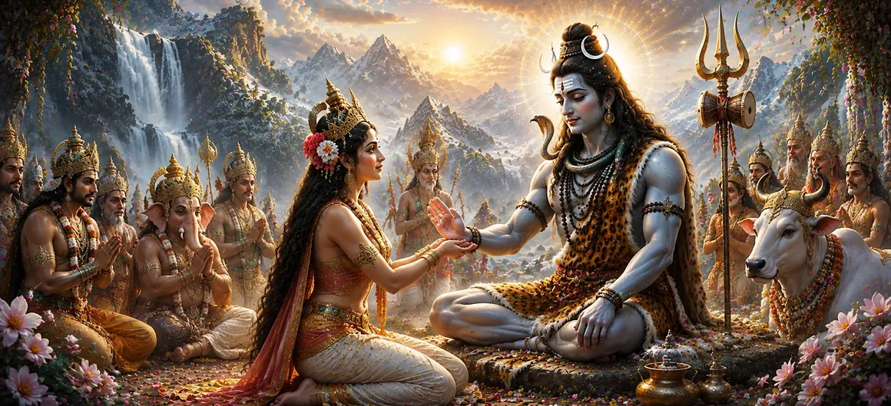

The unwavering devotion and sacred penance of Sati had now reached their destined culmination. Her heart had remained fixed upon Lord Shiva with complete faith, and her austerities had purified both mind and soul. The gods, sages, and celestial beings eagerly awaited the outcome, knowing that the union of Shiva and Sati was essential for the fulfillment of a divine purpose that would benefit the entire universe.
In the spiritual traditions of Hinduism, sincere devotion never goes unanswered. Sati’s love for Shiva was free from selfish motives and rooted in the deepest spiritual truth. Pleased by her steadfast faith and extraordinary austerities, Lord Shiva finally turned his attention toward her and prepared to acknowledge the devotion that had touched even the highest realms of existence.
Though Lord Shiva was detached from worldly desires and remained absorbed in divine meditation, he was never indifferent to true devotion. He recognized the sincerity of Sati’s heart and the purity of her intentions. Her penance was not driven by ambition but by spiritual love, and this devotion naturally invoked Shiva’s compassion and grace.
The acceptance of Sati by Lord Shiva was not merely a response to her penance but the fulfillment of a cosmic destiny established long before. The Divine Mother had incarnated as Sati for this very purpose, and the moment had now arrived for the sacred plan of the universe to move forward.
When the gods learned that Lord Shiva had accepted Sati, they rejoiced greatly. Their concerns about the future of creation began to fade, for they knew that the divine union was now certain. The heavens resounded with celebration as celestial beings praised both Shiva and Sati and offered prayers for their sacred marriage.
The acceptance of Sati marked the beginning of a new phase in the divine narrative. What had started as devotion and penance was now leading toward a sacred union that would influence gods, sages, and all living beings. The story now turns toward the preparations for one of the most celebrated marriages in Hindu tradition.
Her sincere devotion attracted the grace and acceptance of Lord Shiva.
Her penance purified her mind and strengthened her connection with the Divine.
Her efforts helped bring about the divine purpose ordained by the cosmos.
The story of Sati’s acceptance by Lord Shiva demonstrates the ultimate triumph of devotion. Her faith remained unshaken despite challenges, and her perseverance transformed longing into fulfillment. Through her example, devotees learn that sincere spiritual effort is never wasted and that the Divine always responds to pure-hearted devotion.
With Shiva’s acceptance now assured, the path toward their sacred marriage became clear. The hopes of the gods, the devotion of Sati, and the divine will of the cosmos were now moving together toward a single glorious event that would soon unfold before all the worlds.
Sati’s journey teaches that unwavering devotion, patience, and selfless dedication ultimately lead to divine fulfillment. The acceptance of Sati by Lord Shiva symbolizes the union of the devoted soul with the Supreme. It reminds seekers that true spiritual success comes not through force or desire, but through purity of heart, perseverance, and complete trust in the Divine.
The story of Sati’s devotion and Lord Shiva’s acceptance became a source of inspiration for sages, devotees, and seekers throughout the ages. Her unwavering faith demonstrated that true love for the Divine can overcome every obstacle and ultimately receive the blessings of the Supreme.
Shiva’s acceptance of Sati marked more than the approval of a devoted seeker. It signified the beginning of a divine partnership between Shiva and Shakti, whose union would become the foundation of countless sacred events described throughout the Shiva Purana. Their relationship would symbolize the eternal harmony between consciousness and divine energy.
"What is destined by divine will cannot be prevented. Through devotion, patience, and grace, the path was opened for the sacred union of Shiva and Sati, bringing joy to gods, sages, and all the worlds."
The gods worked tirelessly to fulfill the divine plan, and Lord Shiva finally accepted Sati’s devotion. With the sacred union now assured, joy spread throughout the heavens. The next chapter describes the magnificent preparations for the divine wedding, as gods, sages, and celestial beings gather to celebrate one of the most glorious events in the Shiva Purana.